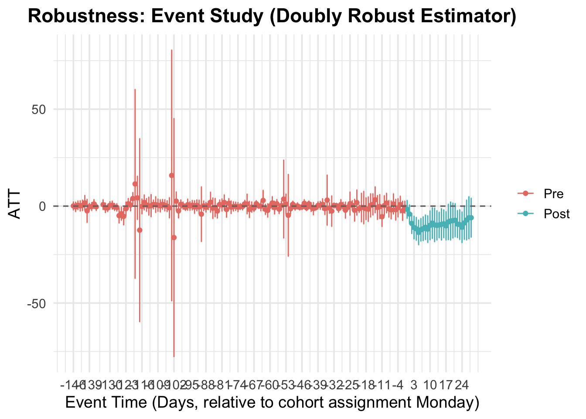
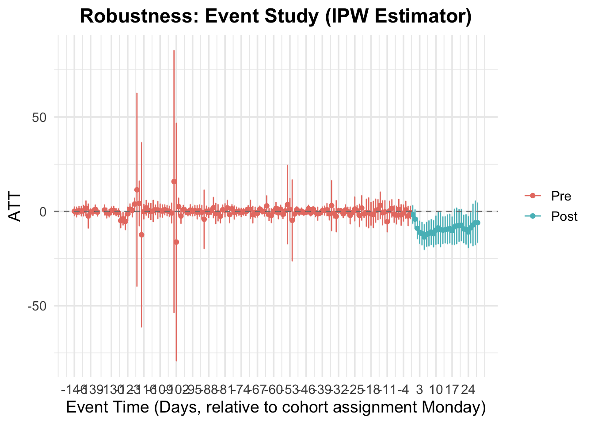
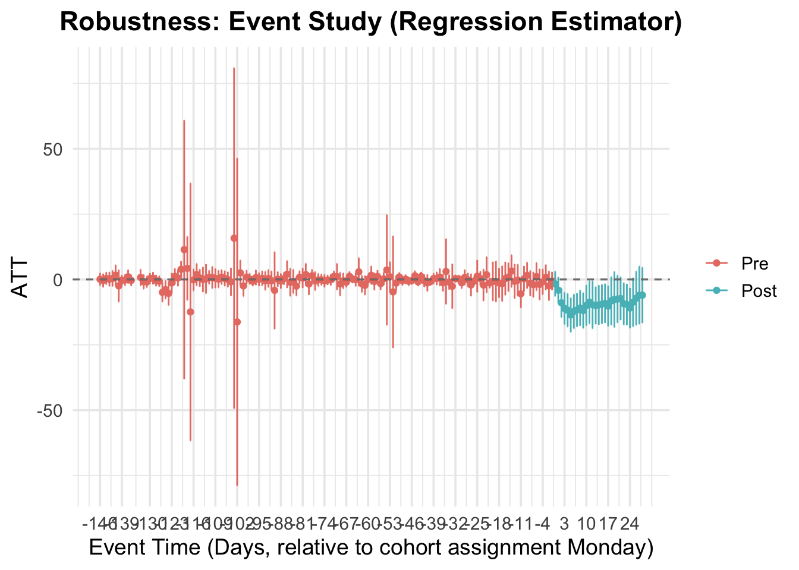
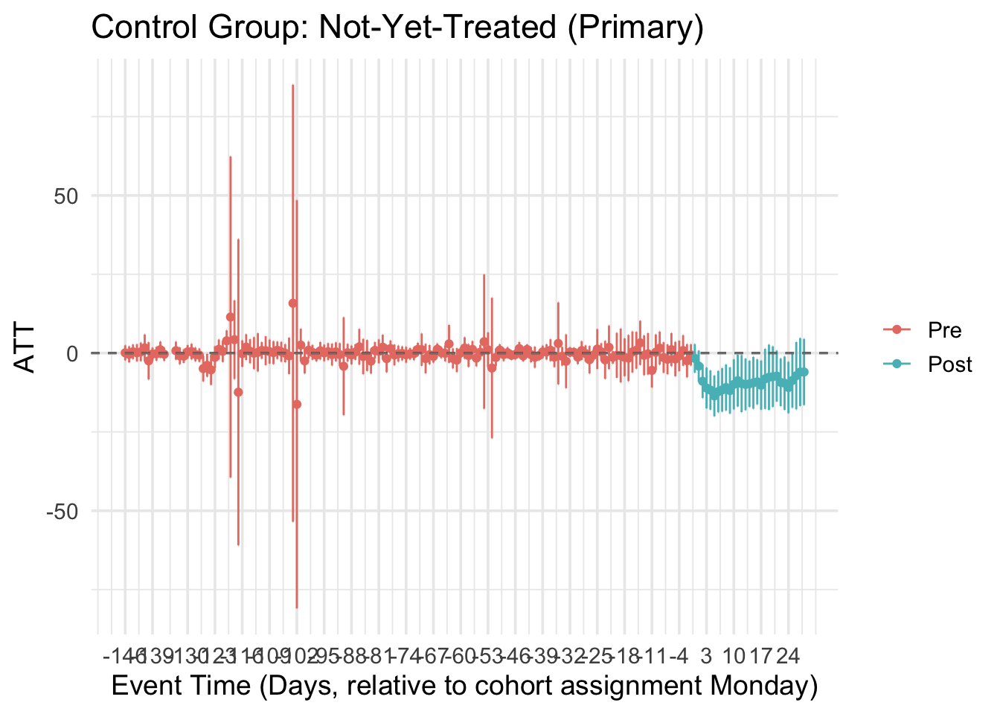
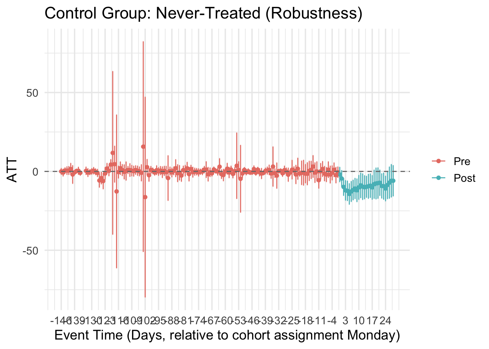
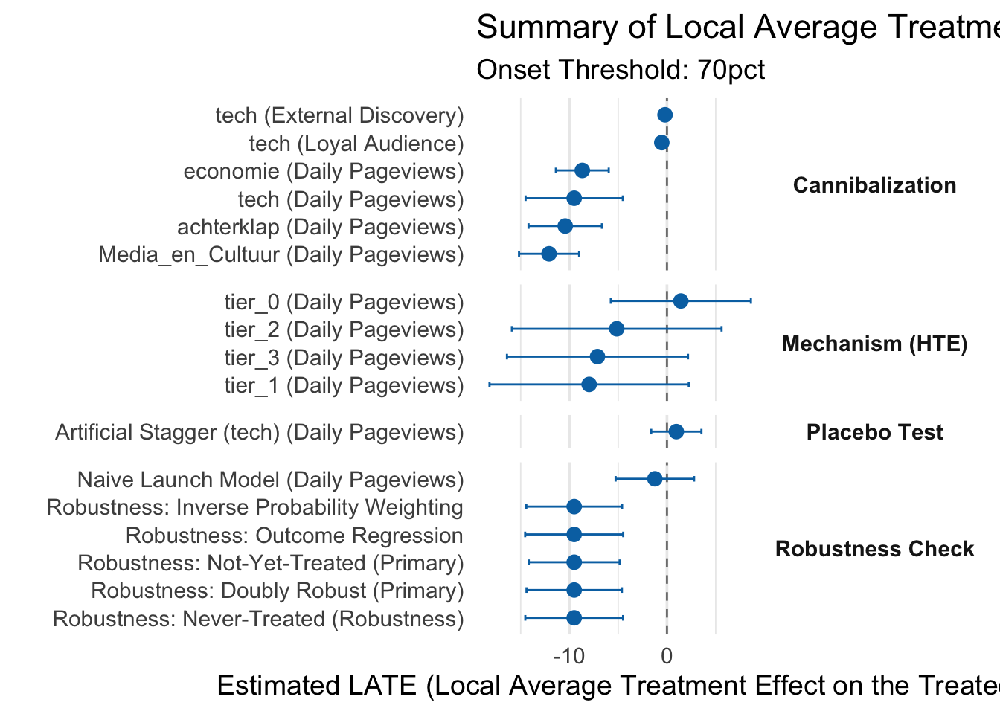
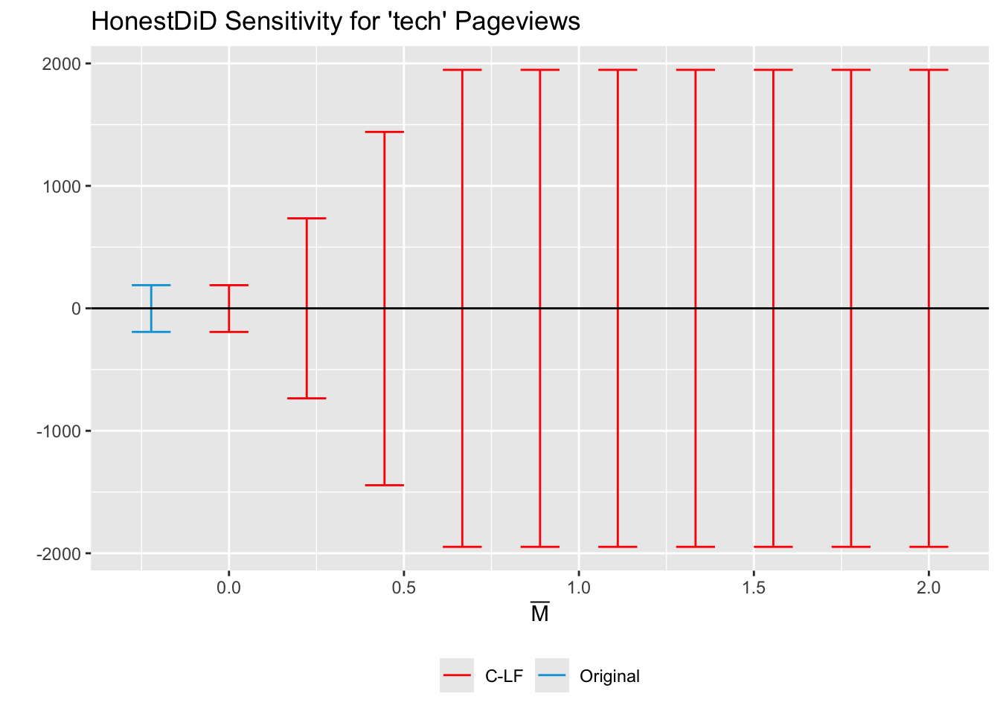

Final Analysis: Cannibalization Effects and Causal Mechanisms
Author
Analysis Report
Published
November 7, 2025
1. Setup & Model Definitions
Code
# Core librarieslibrary(tidyverse)
── Attaching core tidyverse packages ──────────────────────── tidyverse 2.0.0 ──
✔ dplyr 1.1.4 ✔ readr 2.1.5
✔ forcats 1.0.0 ✔ stringr 1.5.1
✔ ggplot2 3.5.2 ✔ tibble 3.3.0
✔ lubridate 1.9.4 ✔ tidyr 1.3.1
✔ purrr 1.0.4
── Conflicts ────────────────────────────────────────── tidyverse_conflicts() ──
✖ dplyr::filter() masks stats::filter()
✖ dplyr::lag() masks stats::lag()
ℹ Use the conflicted package (<http://conflicted.r-lib.org/>) to force all conflicts to become errors
Code
library(arrow)
Attaching package: 'arrow'
The following object is masked from 'package:lubridate':
duration
The following object is masked from 'package:utils':
timestamp
Code
library(here)
here() starts at /Users/hacken000/Desktop/_my_poster_repo_public
Code
library(scales)
Attaching package: 'scales'
The following object is masked from 'package:purrr':
discard
The following object is masked from 'package:readr':
col_factor
Attaching package: 'kableExtra'
The following object is masked from 'package:dplyr':
group_rows
Code
library(params)
Loading required package: whisker
Registered S3 method overwritten by 'params':
method from
print.knitr_kable knitr
Attaching package: 'params'
The following object is masked from 'package:kableExtra':
kable
The following object is masked from 'package:knitr':
kable
# --- Dynamic Paths based on Parameter ---PROCESSED_DATA_DIR <-here("data", "processed")FIGURES_DIR <-here("figures", PERCENT)RESULTS_DIR <-here("results", PERCENT)dir.create(FIGURES_DIR, showWarnings =FALSE, recursive =TRUE)dir.create(RESULTS_DIR, showWarnings =FALSE, recursive =TRUE)# Global analysis parametersANALYSIS_WINDOW <-28MAIN_DATA_PREFIX <-paste0("cs_data_effect_onset_", PERCENT)# --- Define the .RData file path for saving/loading ---MODEL_OUTPUT_FILE <-file.path(RESULTS_DIR, "model_outputs.RData")
1. Analysis function
Code
# (run_cs_analysis function is unchanged, except for the plot)run_cs_analysis <-function(data, y_variable_name ="DAILY_PAGEVIEWS", x_formula =~1,plot_title =NULL,est_method ="dr",control_group ="notyettreated") {if (is.null(plot_title)) plot_title <-paste("Event Study:", y_variable_name)if (sum(data$gname >0) ==0) {message("No treated units found for '", y_variable_name, "'. Skipping analysis.")return(NULL) } results <-tryCatch({att_gt(yname = y_variable_name,tname ="time_period",idname ="ARTICLE_SHORT_ID",gname ="gname",data = data,control_group = control_group,xformla = x_formula,est_method = est_method,panel =TRUE,allow_unbalanced_panel =TRUE,bstrap =TRUE,cband =TRUE) }, error =function(e) {message("Could not run att_gt for: ", y_variable_name, ". Error: ", e$message)return(NULL) })if (is.null(results)) return(NULL) agg_dynamic <-aggte(results, type ="dynamic", na.rm =TRUE, max_e = ANALYSIS_WINDOW) agg_simple <-aggte(results, type ="simple", na.rm =TRUE)# --- THIS IS THE CORRECT FIX ---# Use the 'xgap' argument native to ggdid() plot <-ggdid(agg_dynamic, xgap =7) +theme_minimal(base_size =14) +labs(title = plot_title, x ="Event Time (Days, relative to cohort assignment Monday)", y ="ATT") +geom_hline(yintercept =0, linetype ="dashed", color ="gray50")# --- END FIX ---return(list(results = results, plot = plot, agg_simple = agg_simple, agg_dynamic = agg_dynamic))}# --- This is the correct, multi-argument extract_results function ---extract_results <-function(analysis_obj, group_name, outcome_name ="Daily Pageviews", # Default outcomeanalysis_type ="Cannibalization") { # Default typeif (is.null(analysis_obj) ||is.null(analysis_obj$agg_simple)) {return(tibble(Group = group_name, Outcome = outcome_name, Analysis_Type = analysis_type,Analysis_Label =paste0(group_name, " (", outcome_name, ")"),ATT =NA, Std.Error =NA, Conf.Low =NA, Conf.High =NA, N_Treated =0 )) } res <- analysis_obj$agg_simple dta <- analysis_obj$results$DIDparams$data n_treated <-length(unique(dta$ARTICLE_SHORT_ID[dta$gname !=0]))tibble(Group = group_name,Outcome = outcome_name,Analysis_Type = analysis_type,Analysis_Label =paste0(group_name, " (", outcome_name, ")"),ATT = res$overall.att, Std.Error = res$overall.se, Conf.Low = res$overall.att -1.96* res$overall.se, Conf.High = res$overall.att +1.96* res$overall.se, N_Treated = n_treated )}
2. Run All Analyses
3. Robustness Checks (Estimators)
Code
cat("\n#### Robustness to Alternative Estimators\n\n")
#### Robustness to Alternative Estimators
Code
estimators <-c("dr", "ipw", "reg")robustness_checks <- purrr::map(estimators, ~run_cs_analysis(data = df_main, y_variable_name ="DAILY_PAGEVIEWS", est_method = .x)) %>%set_names(estimators)robustness_summary <- purrr::map_dfr(robustness_checks, ~tibble(ATT = .x$agg_simple$overall.att, `Std. Error`= .x$agg_simple$overall.se), .id ="Original_Estimator_Tag") %>%mutate(Estimator =case_when( Original_Estimator_Tag =="dr"~"Doubly Robust (Primary)", Original_Estimator_Tag =="ipw"~"Inverse Probability Weighting", Original_Estimator_Tag =="reg"~"Outcome Regression" ) ) %>%select(Estimator, ATT, `Std. Error`)knitr::kable(robustness_summary, caption ="Comparison of ATT estimates for Total Pageviews using different estimators.", digits =3)
Comparison of ATT estimates for Total Pageviews using different estimators.
Estimator
ATT
Std. Error
Doubly Robust (Primary)
-9.513
2.495
Inverse Probability Weighting
-9.513
2.505
Outcome Regression
-9.513
2.566
Code
write.csv(robustness_summary, file.path(RESULTS_DIR, "robustness_summary_estimators.csv"), row.names =FALSE)purrr::iwalk(robustness_checks, ~{# .x is the analysis object, .y is the estimator tag (dr, ipw, reg)if (!is.null(.x) &&!is.null(.x$plot)) {# Determine the plot title based on the estimator plot_title <-switch(.y,"dr"="Robustness: Event Study (Doubly Robust Estimator)","ipw"="Robustness: Event Study (IPW Estimator)","reg"="Robustness: Event Study (Regression Estimator)",paste("Robustness: Event Study (", toupper(.y), "Estimator)") )# 1. Add specific title to the plot plot_robustness <- .x$plot +labs(title = plot_title) +theme(plot.title =element_text(hjust =0.5, face ="bold"))# 2. Save the plot using a descriptive file nameggsave(file.path(FIGURES_DIR, paste0("event_study_robustness_estimator_", .y, ".png")), plot = plot_robustness, width =10, height =6 )# 3. Print the plot to the reportprint(plot_robustness) }})



Code
cat("\n#### Robustness to Alternative Control Groups\n\n")
#### Robustness to Alternative Control Groups
Code
control_groups <-c("notyettreated", "nevertreated")control_group_checks <- purrr::map(control_groups, ~run_cs_analysis(data = df_main, y_variable_name ="DAILY_PAGEVIEWS", control_group = .x)) %>%set_names(control_groups)control_group_summary <- purrr::map_dfr(control_group_checks, ~tibble(ATT = .x$agg_simple$overall.att, `Std. Error`= .x$agg_simple$overall.se), .id ="Control Group") %>%mutate(`Control Group`=case_when(`Control Group`=="notyettreated"~"Not-Yet-Treated (Primary)", `Control Group`=="nevertreated"~"Never-Treated (Robustness)"))knitr::kable(control_group_summary, caption ="Comparison of ATT estimates for Total Pageviews using different control groups.", digits =3)
Comparison of ATT estimates for Total Pageviews using different control groups.
Control Group
ATT
Std. Error
Not-Yet-Treated (Primary)
-9.513
2.377
Never-Treated (Robustness)
-9.513
2.557
Code
write.csv(control_group_summary, file.path(RESULTS_DIR, "robustness_summary_controls.csv"), row.names =FALSE)# 1. Add clear titles to the individual plotsplot_notyettreated <- control_group_checks$notyettreated$plot +labs(title ="Control Group: Not-Yet-Treated (Primary)")plot_nevertreated <- control_group_checks$nevertreated$plot +labs(title ="Control Group: Never-Treated (Robustness)")# 2. Save them as two separate plot filesggsave(file.path(FIGURES_DIR, "event_study_robustness_control_notyettreated.png"), plot = plot_notyettreated, width =10, height =6)ggsave(file.path(FIGURES_DIR, "event_study_robustness_control_nevertreated.png"), plot = plot_nevertreated, width =10, height =6)# 3. Print both plots to the reportprint(plot_notyettreated)

Code
print(plot_nevertreated)

4. Summary Plot & Table
4.1 Load Objects & Create Report

Analysis
N Treated
ATT
Std. Error
Mechanism (HTE)
tier_0 (Daily Pageviews)
192
1.425
3.6645365
tier_1 (Daily Pageviews)
177
-7.980
5.2128602
tier_2 (Daily Pageviews)
162
-5.150
5.4855100
tier_3 (Daily Pageviews)
200
-7.125
4.7364594
tech (Daily Pageviews)
288
-9.513***
2.5438980
tech (Loyal Audience)
288
-0.531***
0.1554357
tech (External Discovery)
288
-0.199
0.1727330
achterklap (Daily Pageviews)
731
-10.433***
1.9194648
economie (Daily Pageviews)
1400
-8.683***
1.3831702
Media_en_Cultuur (Daily Pageviews)
1148
-12.091***
1.5717541
goed_nieuws (Daily Pageviews)
0
NA (No onsets)
NA
Naive Launch Model (Daily Pageviews)
731
-1.242
2.0538403
Robustness: Doubly Robust (Primary)
NA
-9.513***
2.4952270
Robustness: Inverse Probability Weighting
NA
-9.513***
2.5053207
Robustness: Outcome Regression
NA
-9.513***
2.5656980
Robustness: Not-Yet-Treated (Primary)
NA
-9.513***
2.3773536
Robustness: Never-Treated (Robustness)
NA
-9.513***
2.5574298
Artificial Stagger (tech) (Daily Pageviews)
731
0.959
1.3145143
Placebo: Pre-Period (tech)
0
NA (No onsets)
NA
Placebo: Pre-Period (achterklap)
0
NA (No onsets)
NA
Placebo: Pre-Period (economie)
0
NA (No onsets)
NA
Placebo: Pre-Period (Media_en_Cultuur)
0
NA (No onsets)
NA
Placebo: Pre-Period (goed_nieuws)
0
NA (No onsets)
NA
5. Save Plots & Data for Meta-Analysis
6. Sensitivity (HonestDiD)
#### HonestDiD Sensitivity Analysis

HonestDiD sensitivity plot, assessing the robustness of the main finding to violations of the parallel trends assumption.